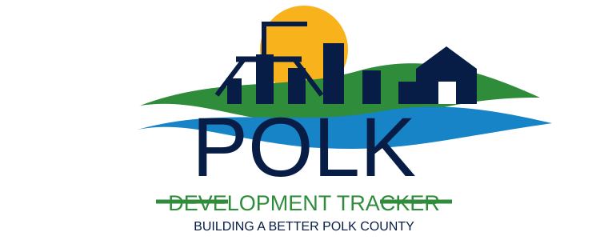

What’s New in Polk County
Positive local growth news only: new restaurants, housing developments, highways, roads, hotels, retail, and business openings across Polk County, Florida.

Positive local growth news only: new restaurants, housing developments, highways, roads, hotels, retail, and business openings across Polk County, Florida.